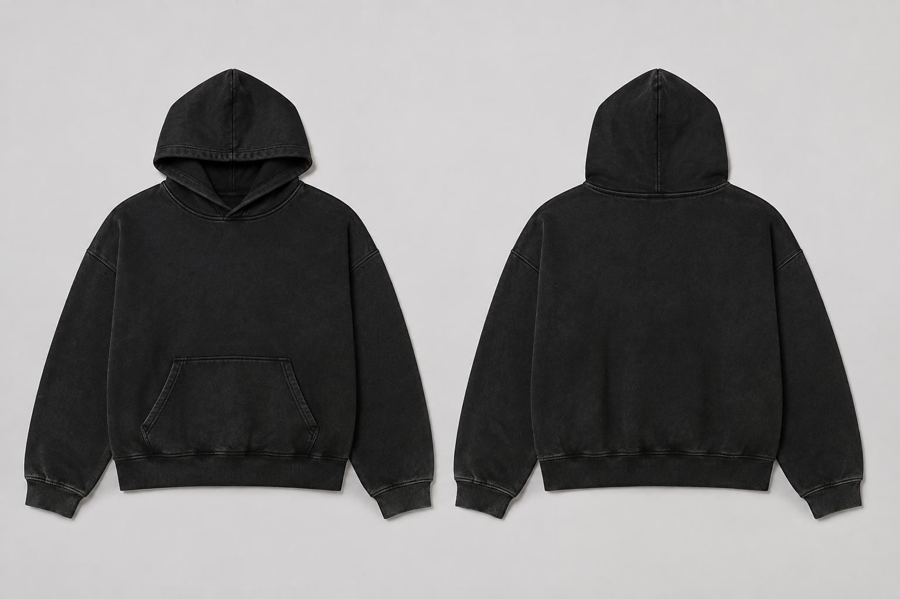

RAW/01 HOODIE
Washed black · applique + broderie
Des coupes boxy lourdes. Des marquages tactiles. Aucun bruit inutile.
Voir le drop ↘
D2M DEAD2METrois silhouettes. Pas trente références.
Washed black · applique + broderie
Vintage bone · 240 GSM · broderie
Vintage oxblood · 240 GSM · print relief
Corps plus court, poitrine large et épaules descendues. La silhouette reste construite.
Jersey lourd pour les tees; molleton dense pour le hoodie. Les poids finaux sont confirmés après échantillon.
Petite broderie devant, application à bords bruts au dos. Le vêtement ne dépend pas d'une image poster.
DEAD2ME travaille autour des traces que les gens laissent : une marque, une couture, une couleur passée. RAW SIGNAL est la première capsule — sobre de loin, précise de près.